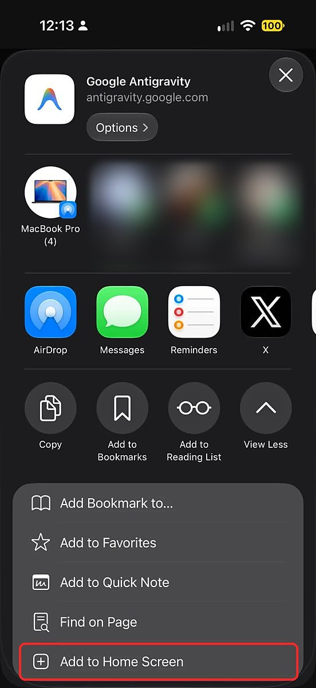
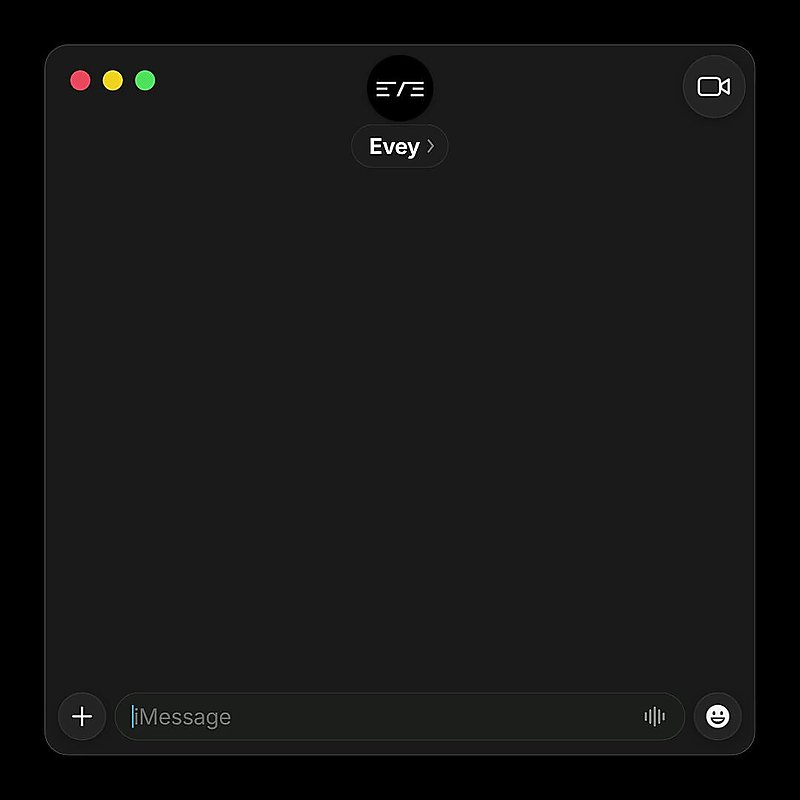

AI 日报 · 11月22日
代理从桌面走向移动，工具链继续分化
Builder 聚焦桌面体验、手机远程控制和个人代理；Linear 访谈讨论 AI 对工作追踪的影响，开源榜单出现安全与研究技能。
桌面代理
移动远程
开源技能
工作流
5
Builder 动态
3
上榜仓库
1
深度对话
今日要点
深度对话
Linear COO 谈 AI 与工作追踪
公开访谈中，Linear COO Cristina Cordova 讨论从手工追踪 issue 到让软件承担更多工作管理的转变。节目标题提及营收到 1 亿美元；此处仅概括访谈原话。
手工追踪不再是唯一方式
Cordova 在访谈开头解释，issue 仍会存在，但由人手动维护每项工作状态的方式可能改变。
产品定位需要重新解释
当产品从 issue tracker 延伸到更广的工作协作，客户会重新询问采购的具体价值。
RSS 精选
具身智能的人才需求
Builder 动态
产品入口与个人代理
Josh Woodward｜网页模型选择器新交互
Google 产品负责人称团队把 Gemini Neon 的一个社区灵感迅速做进网页产品；长按模型选择器即可体验。
Peter Yang｜手机远程访问代理线程
Peter Yang 分享将 Antigravity 网页添加到手机主屏幕的操作，便于在移动端远程查看和继续多个线程。

Guillermo Rauch｜个人购物代理模板
Vercel CEO 回顾早期个人购物代理实验，认为渠道、模型和基础设施成熟后，开发者更容易构建可自行控制的个人代理。

Aaron Levie｜给代理目标与空间
Box CEO 认为模型能力提升后，工作者可逐渐从指定每一步做法，转向定义目标并留给代理探索方案的空间。
GitHub Trending
安全技能与研究工具上榜
11 月 22 日 GitHub Trending 快照；星标和 Fork 数取自同日 GitHub API。
今日思考
入口增多后，先核对任务闭环
桌面、网页与手机都在成为代理入口。比较这些体验时，先用同一个真实任务检验上下文能否延续、结果能否核对、失败后能否接管；入口的新鲜感不能代替任务完成质量。
今天可做
选一个跨设备任务，记录从发起到验证结果的每一步，再比较不同代理入口。
参考来源